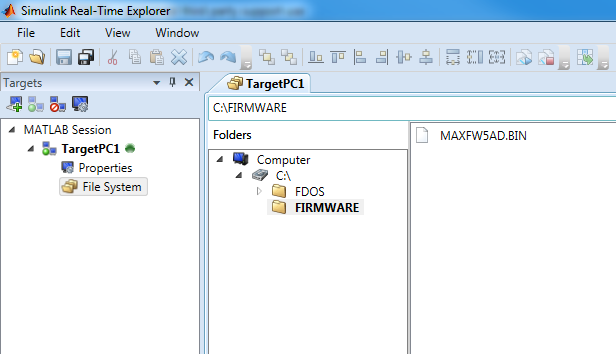
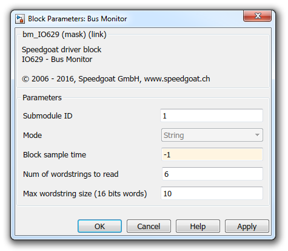
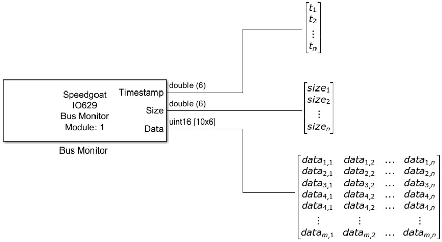

IO629 Usage Notes — Usage information about the I/O module
The Speedgoat IO629 I/O module is an external device. It is connected to a Speedgoat real-time target machine via a PCIe expansion card and a PCIe extension cable. The I/O module provides multiple interfaces for different functions and protocols, however, Speedgoat provides Simulink driver blocks uniquely for the ARINC 629 avionic protocol.
The green rectangle shows the PCIe expansion card on the RTTM with the PCIe extension cable. The yellow rectangle shows the front ARINC 629 SIM interface. This connection can only be used with the appropriate current mode coupler.
The blue rectangle shows the PCIe connection, and the orange rectangle shows the ARINC 629 TTL connector.
In order to use the IO629 with a Speedgoat RTTM, it's necessary to set the switch pointed by the red arrow to "PCIe/PXIe/TB" as shown in the picture.
In order to use Speedgoat driver blocks for the IO629 I/O module it's necessary to load the MAXFW5AD.BIN file onto the Speedgoat real-time target machine file system. This binary file must be placed in a folder named FIRMWARE as depicted in the picture below.
This can be done by using Simulink Real-Time Explorer (MATLAB command slrtexplr). It is also possible to achieve the same result using MATLAB command line tools. Please refer to the MATLAB documentation or contact Speedgoat support.

IO629 Remote Terminal Simulink blocks need an XPP to define their message structure. For a detailed explaination of the XPP concepts, please refer to the ARINC 629 specification.
In the context of the Speedgoat IO629 I/O module, the XPP is defined in a .csv file.
The csv consists of 4 columns:
The first column holds the index of the row in the XPP (starting from 1)
The second column holds the index of the column in the XPP (starting from 1)
The third column holds the label
The fourth column holds the size of the wordstring (in datawords)
The data sizes are needed for setting the Simulink block's port sizes
Example
A csv file with the following content:
1, 1, 1, 1
1, 2, 2, 1
1, 3, 3, 1
2, 1, 4, 2
2, 2, 5, 2
3, 1, 6, 3
4, 1, 7, 4
4, 2, 8, 4
corresponds to an XPP formatted as follows (labels):
With the corresponding data sizes:
In this example a Bus Monitor block is configured as follows:

Submodule ID should be set according to a Submodule Block existing in the model.
Block sample time is set in order to receive data frequently enough to avoid a Rx buffer overflow. Indeed, if the Rx buffer gets full, the acquisition automatically stops and any new received data is lost. This parameter should be chosen according to all the ARINC 629 databus and Remote Terminals application settings, timers and wordstring lengths in particular.
At each simulation step on the Timestamp and Size ports an array of length Num of wordstrings (index n = 6 in the picture below) is emitted.
The Data output port outputs a matrix with Max datastring size lines (index m = 10 in the picture below) and Num of wordstrings columns. Each column contains the received data (16 bits words) corresponding to the n-th data string. If the received number of datawords is smaller than Max wordstring size then the remaining values are zero padded in order to fill the matrix values. The Size port indicates how many words (16 bits label and 16 bits datawords) were correctly received in each wordstring.
